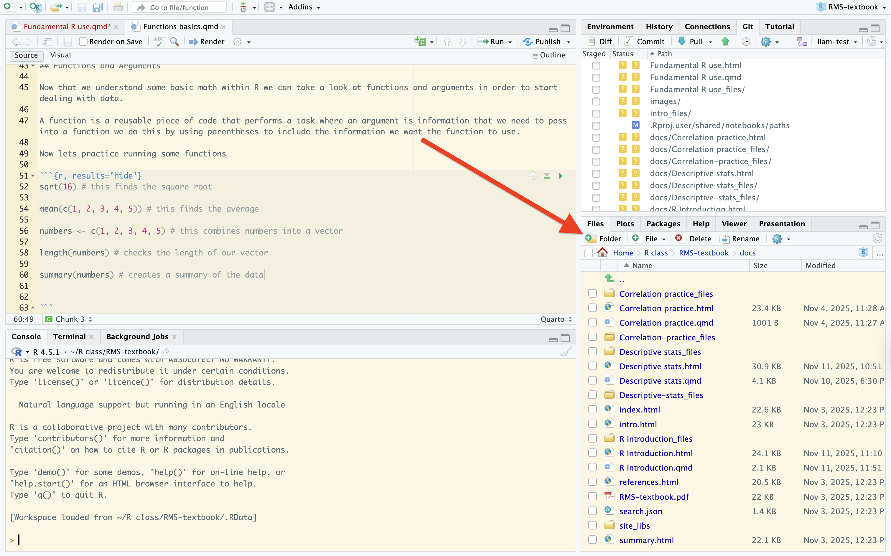

2 Fundamentals of R
2.1 2.1 Introduction
This chapter will go over the fundamental tools you will need in order to work in R and to create projects and to experiment with the building blocks of Rstudio. If you have not already gone to chapter one that teaches you how to set up Rstudio do that now.
How to use packages and what you will need to do in order to update them.
How to create and manipulate data.
How to use functions, objects, and pipes.
Common errors and different ways to deal with them.
And the main types of data that you will be running into in Rstudio.
2.2 2.2 Rstudio Overview
Once you open Rstudio you might notice that there are four different panes on your screen that each look different from the other. Although it might look overwhelming these panes are all important when operating in Rstudio and will all be used
2.2.1 2.2.1 Console Frame
The console frame is the bottom left frame on your screen. This is where you will be viewing some of your code. You can also see outputs from your code directly in this frame and is one location of where you will be trouble shooting as well. Think of this frame as a chat box in R in order to see behind the scenes of what you will be running. You should make note that the console is like a scrap piece of paper or and etch an sketch its a great place to do some troubleshooting or viewing data through the glimpse() function but any work you do here will not be saved. The console is also next to the terminal which is the tab right next to it. They both can run commands but are different in nature.The console is intended to run commands that work mainly inside Rstudio itself. The terminal however runs systems commands like something you do on your computer.
2.2.2 2.2.2 Source Frame
The source frame or editor frame is the top left frame on your screen. This frame is the primary location of where you will be doing your work and typing all of your code. When you create a new code chunk you will do that in the source frame. You should be able to see all the lines and numbers of each code line. You can also save and open new documents and files at the farthest top left corner of this frame. Opening your Rmarkdown files like you created in chapter 1 is a great way to practice using the source frame and where you will do this.

2.2.3 2.2.3 Environment/History
The environment or history frame can be seen in the top right frame on your screen. This is where you can view current objects that you have created which we will discuss further in the chapter as well as data sets and where you can track your steps by viewing the command history that you have run.

2.2.4 2.2.4 Files/Packages
The last frame on the bottom right is your files and packages frame. This frame is more of a window into your own computer itself in the sense that you are able to view the packages and files that you have on your current computer. You can also use it to check any plots you might have and to read any documents on your computer as well. You only will need to download a package one time but whenever you open Rstudio you will need to load it up every time.

Suggestion: If you wish to change the layout of your frames to customize it simply click tools at the top of your computer then global options then to pane layout to customize the layout to whatever is the best for you.
2.3 2.3 Packages and the tidyverse
Now that you are familiar with where you can view and access your packages we will now take a closer look as to what they are and different tips fro them as well as introducing you to a very useful package that will make writing code much easier and it is called the tidyverse.
2.3.1 2.3.1 What is a package?
You might be wondering how we are going to be using something that you typically get in the mail on your computer. In R a package is where R gets its main power from. We have packages because just like in real life they contain something. In R packages can contain a multitude of functions, data, and documents.
2.3.2 2.3.2 Installing and finding packages
Whenever you want to install a package you will have to run a command. When you are working in a document you will need to load your packages each time or else your code will not run because the package has not been reloaded. You can install packages by going to your console frame in the bottom left. Once you are there you will type the following code. Do not be afraid if you see a warning in yellow that is perfectly normal.
install.packages("tidyverse")
install.packages("dplyr")Then to load it into your active session the first thing you always want to do is to load it into your session. You will want to do this by running the following in your source frame or the top left. We do this by using the the library function which calls up any package that you have installed it will not work if you do not have the package installed.
library(tidyverse)
library(dplyr)Once you have successfully loaded the tidyverse into your current session you should get the following result in your console:

THIS IS OK IT MEANS YOU HAVE SUCCESFULLY LOADED YOUR PACKAGE
Now sometimes you will need to update your packages because if you don’t it can cause them to not load and your code will not run. If this happens all you will have to do is run this code.
update.packages()To see what packages you have installed you can either go to the bottom right pane and find the packages tab to find a list of all packages and which are installed. Or you could also run this code.
installed.packages()2.3.3 2.3.3 The Tidyverse
Now that you have successfully installed the tidyverse we can examine it and what it does. When thinking about the tidyverse the best way to explain it is think of it like a universe. A universe is a space that contains different things like planets which contain different things like people. Well just like a universe the tidyverse contains a large amount of packages inside of it that are meant to make using R easier and work more efficiently. All the packages inside the tidyverse all share a common philosophy and syntax. Think of it like the world having america and how we all share a common philosophy and syntax. The packages in the tidyverse work the same way. Because all of these functions use the same grammar it makes it easier for us to read R code. Take a look at this example
library(tidyverse)
# Example of data transformation
starwars %>%
select(name, height, mass, species) %>%
filter(species == "human") %>%
arrange(desc(mass))2.4 2.4 Functions
Now that we are able to successfully load up packages we can start looking at some functions. A function is a command that begins an action this is a basic example of a function
function_name(argument1 = value1, argument2 = value2)2.4.1 2.4.1 Applied Functions
The function is made up of two arguments that we give values to.
Next we can look at a basic function called the combine function or it can be viewed as this c(). It takes every value we have in the function and applies it to all of them. This can be used for mathematical purposes when using Rstudio like a calculator. Lets take a look at an example
mean(c(1, 2, 3, 4, 5)) [1] 3As you can see we get the output after and we can see the answer is 3. We ran this function and all the values were applied to each other while we also utilized the mean function combining two functions.
2.4.2 2.4.2 Creating Functions
Creating your own function is a very useful skill because it allows you to easily apply values to data without you having to type it out over and over again. In order to create a function you must name it then assign it a value by using the <- symbol. This assigns whatever you write to that name which then should appear in the top right frame or your environment frame.
plus_two <- function(x) {
x + 2
}
plus_two(5)[1] 7As you see we created the function plus_two Which will take whatever is in our function and add 2 to it so when we use the function and put 5 in there it takes 5 and already adds the two to it.
2.4.3 2.4.3 Assignment operator
Whenever we want to assign a value to something we need to use the <- symbol. This will then take whatever we assign to the value we create. As you can see in the example above the function we created was assigned to the value plus_two because we used the assignment operator to give it that value.
2.4.4 2.4.4 Arguments
When we are using functions we must also know that we are dealing with arguments as well. An argument is the information that we put into a function so the function knows what to do with it. So think of the function like a machine and the arguments are the ingredients that we give it.
mean(x = c(1, 2, 3, 4, 5))As you can see here the mean is the function we are using and the argument is everything inside of the parenthesis.
2.5 2.5 Creating Data
There are several different ways that we can create data which is important when we want different functions
2.5.1 2.5.1 Vectors
A vector is a simple data structure that holds elements of the same kind. So if we want to combine a bunch of names we can use a vector to do so but they need to all be the same type of data. Which we will go over the different types of data later in the chapter. Here are some simple basic examples of a vector
numbers <- c(1, 2, 3, 4, 5, 6, 7)
names <- c("Adam", "Steven", "James")Now once we have these saved we can use them again if we want since we have combined them all into one vector.
numbers[1] 1 2 3 4 5 6 72.5.2 2.5.2 Data Frames
A data frame is a different way of creating data. When you use a data frame think of it like a window frame. In a data frame the data is arranged into a rectangular shape and uses rows and columns. The columns in a data frame are called variables and the rows in our data frame are called observations. Now we can use data frames to combine two different types of data into one output.
data.frame(
name = c("James", "Henry"),
age = c(21,67),
sport = c("Baseball", "Soccer")
) name age sport
1 James 21 Baseball
2 Henry 67 SoccerYou can see our output of how the data is arranged into the order that we make it to where the same location is applied so that they go in order. You can also see at the bottom of the output where it displays the number of rows that we have.
2.5.3 2.5.3 Tribbles
A tribble is short for transposed tibble and it is a different way to create small data frames.
library(tibble)
people <- tribble(
~name, ~age, ~city,
"James", 21, "Evansville",
"Hunter", 38, "Toledo"
)
people# A tibble: 2 × 3
name age city
<chr> <dbl> <chr>
1 James 21 Evansville
2 Hunter 38 Toledo Now you can see our tribble fully completed with both rows and columns where you can see in the bottom of the output that the tribble shows the rows. It also tells us the type of data that we are seeing in the output which you will learn more about later in the chapter.
2.5.4 2.5.4 Glimpse
When you want to examine the characteristics of your data you can use glimpse to get more information about it. It provides the full data for your set and gives all the details you could need.
glimpse(people)Rows: 2
Columns: 3
$ name <chr> "James", "Hunter"
$ age <dbl> 21, 38
$ city <chr> "Evansville", "Toledo"Look at the output above you can see next to name the <chr> that means the column contains data that is characters. The one below that is the <dbl> so you can see that is double data. This shows us that vectors simple a column of names and values that are the same type.
2.6 2.6 Objects
In R the only thing we use are objects and a object can be data, a function or even models that we need. In order to assign a object we use the <-.
x <- 67
y <- "Good Morning"2.6.1 2.6.1 Listing objects
If you ever want to see what your current objects are you can always look in your environment frame to see it. You can also use the list function ls() to see this as well.
ls()2.7 2.7 The pipe
Now we will be working with the pipe or |>. The pipe is a very important tool because it works kind of like a river with bridges. Usually in R when we run multiple functions we would have to think of the output like a boat going through a river. Normally we would have to manually open each bridge in order for it to pass through to the next part of the river. The pipe makes it easier for us by doing that automatically. So whenever we are running multiple functions in a code chunk we use the pipe to channel the output right into the next function without having to do the work ourselves. In the tidyverse the pipe is represented as %>% which can be easily created with the shortcut command + shift + m. Now lets look at an example of how the pipe works.
mtcars %>%
group_by(cyl) %>%
summarize(mean_mpg = mean(mpg))
You can see in the output now that in our pipe we took the car data set then funneled in the function of grouping cars by their cylinders then taking that output and funneling it into finding the average miles per gallon which creates our final output.
Now try running the same code without the use of the pipe and see if it still works.
2.8 2.8 Types of data
There are different types of data in R and it is important to be able to distinguish the differences because we work with different types in different ways so being able to tell them apart will help us better interpret data.
2.8.1 2.8.1 Numeric data
Numeric data is the type of data that we see that represents whole numbers. These are pretty common and are just regular numbers that can be represented differently. When looking at an output in R we can see if the data we are looking at is numeric by looking for how it is abbreviated which is by num. Whenever we see a column whit this title we know the data in that column is numeric. You can use the typeof() function in R to see exactly what type of data you are dealing with.
typeof(42)[1] "double"typeof(FALSE)[1] "logical"typeof("jack")[1] "character"2.8.2 2.8.2 Character data
Character data is words that we use in R that are not functions but represent something in the data we are dealing with. These could be examples like names in a data set that represent something. It is important to note though we can tell if the data is a character because it must always be in "". This shows that it is just text we are dealing with and not some function. The abbreviation for character data in R is chr. So whenever you see a column with chr you know the data in it is character data.
my_vector <- c("apple", "banana", "cherry")
str(my_vector)2.8.3 2.8.3 Logical data
Logical data is a type of Boolean data in the sense that it can only represent one of two values. This means that when we look at logical data we are looking to see if something is either true or false. Kind of like in real life when we use logic to see if we believe something or not. So in R logical data will be represented as either TRUE or FALSE. It is important that they are all capitalized so they cannot be confused for something else. The abbreviations in R are simple because it will either be T or F.
# Assigning logical values using full names
bool1 <- TRUE
bool2 <- FALSE
# Assigning logical values using abbreviations
bool3 <- T
bool4 <- F2.8.4 2.8.4 Factor data
In R we refer to factor data as the type of categories that variables are stored as a factor. It works with variables that have a fixed and already known set of possible values. We use factor data differently depending on the data we are trying to use. We use factor() to create a new factor from a vector. We use as.factor() to move an object like a character list into a vector. is.factor() is when we want to check if an object is already a factor.
class(factor(c("Low"), "High"))2.8.5 2.8.5 Double data
Double data is how we refer to data that are numbers but not whole numbers. Not to be confused with numeric data double data deals with decimals that are numbers. This can be represented as dbl. So this tells us that whenever we see a column that has that list it means that we are dealing with numbers but they are decimals and not whole numbers
2.9 2.9 Tips and trouble shooting
When working with R there is always going to be something that will end up needing fixing or something will go wrong and you have no idea what to do. That is OK because there are a few different ways to figure things out when you need help.
2.9.1 2.9.1 ? Tool
The question mark tool is a great too that can help explain anything you need. Lets say for example you don’t know what a mean is. You can type in ?mean and the help tab in your bottom right frame will open with whatever you need. It provides arguments and explanations as it is a great tool to help you figure things out.
?mean
2.9.2 2.9.2 Help
The help function is another way to get info on objects you might be struggling with. It works the same as the question and can give you more information on it.
help("mean")2.9.3 2.9.3 Traceback
Whenever we are working in R sometimes we might get an error. This can be confusing because R doesn’t always tell you where you made this error it usually tells you what is wrong and when you are writing lots of code it can be difficult to find where you went wrong. Well you can use the traceback() function to find exactly where your code stopped working.
2.10 2.10 Practice
Now that you learned the basic fundamentals of R and operating inside of it here are some practice problems to make yourself more comfortable with working in R
Create a
tribble()with four of your friends names, ages, and cities they are fromUse
glimpse()to inspect the dataWrite a function that doubles any number
Use the pipe to select certain columns
Find and list each columns type of data